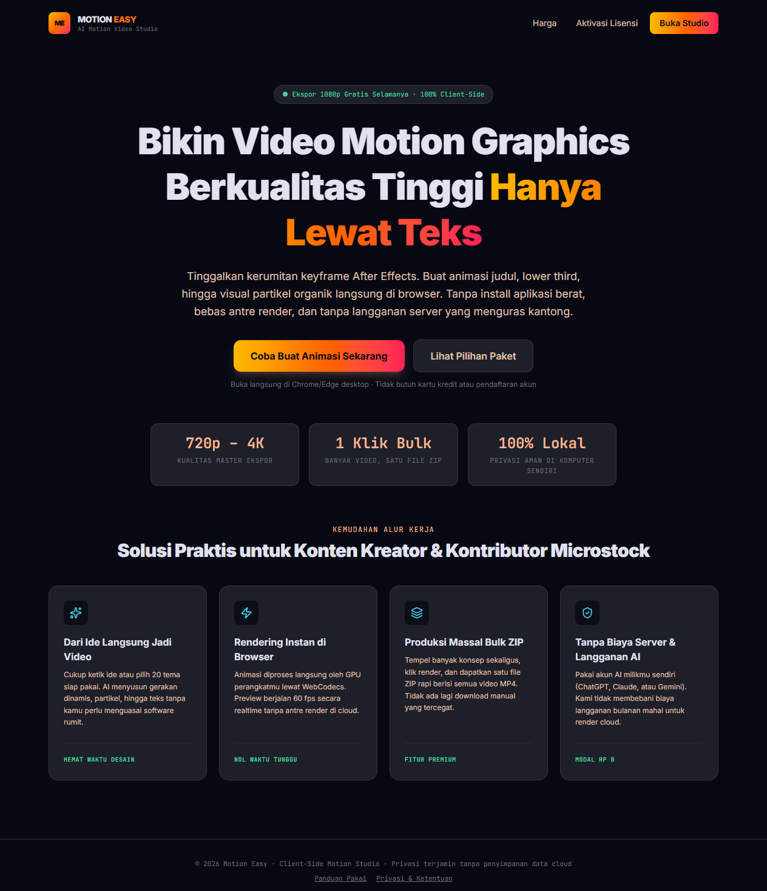
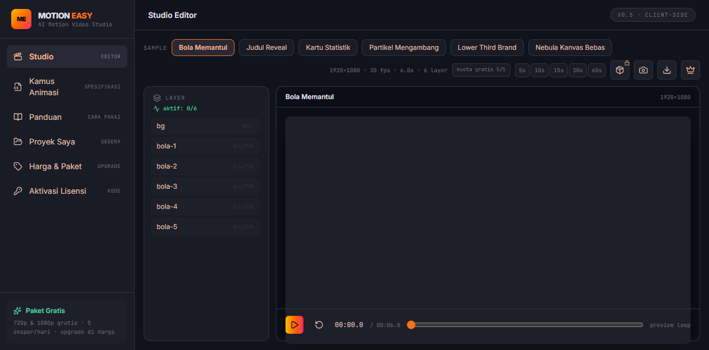
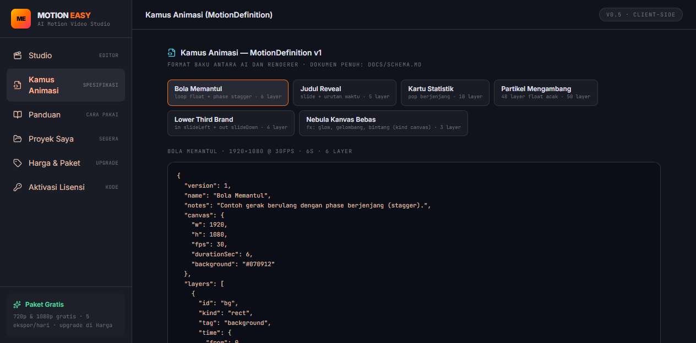
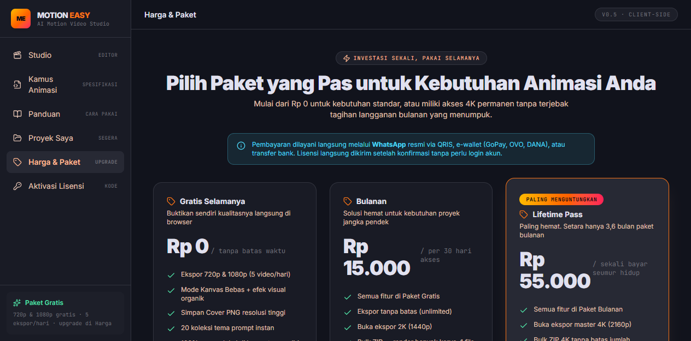
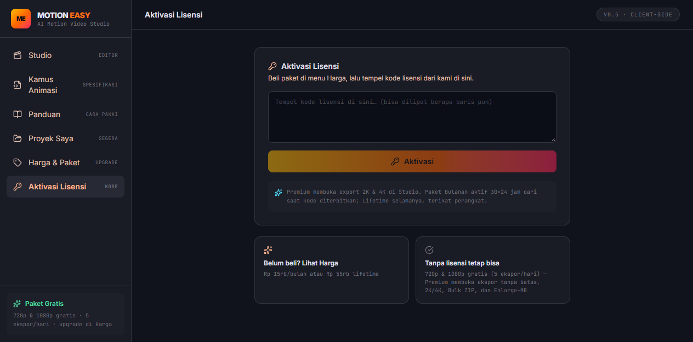

Panduan ramah pemula untuk membuat animasi, memakai AI, melakukan preview, dan mengekspor MP4 langsung dari browser.
Pilih tema → tulis brief → gunakan AI → validasi → preview → export
Motion Easy adalah studio motion graphics yang berjalan langsung di browser. Anda dapat membuat intro, judul, lower third, logo reveal, infografik, background, dan efek partikel tanpa menginstal software editing yang berat.
Jelaskan ide, teks, gaya, warna, durasi, dan tujuan video.
Salin prompt otomatis ke AI pilihan Anda.
Tempel jawaban AI ke area input MotionDefinition.
Validasi, preview, lalu ekspor ke MP4.
Animasi dan render diproses di perangkat Anda. Data karya tidak perlu diunggah ke server Motion Easy.
Halaman utama menjelaskan manfaat Motion Easy dan mengarahkan Anda ke Studio atau Harga & Paket.

| Menu | Fungsi |
|---|---|
| Studio | Membuat, memvalidasi, melihat preview, dan mengekspor animasi. |
| Kamus Animasi | Melihat contoh dan struktur MotionDefinition. |
| Panduan | Ringkasan alur penggunaan lima langkah. |
| Proyek Saya | Fitur simpan/muat proyek masih disiapkan. |
| Harga & Paket | Perbandingan fitur dan pembelian lisensi. |
| Aktivasi Lisensi | Memasukkan kode lisensi Premium. |
Buka website dan klik Buka Studio.
Untuk percobaan pertama, pilih Judul Reveal atau tema siap pakai lainnya.
Pilih kategori, gaya visual, durasi, FPS, dan warna.
Klik Validasi & Preview, lalu putar animasi dari awal sampai akhir.
Pilih 1080p, klik ekspor, dan cari file di folder Downloads.

Buat video pembuka untuk channel YouTube bernama “Ruang Kreatif”. Tampilkan judul “Ruang Kreatif” dan subjudul “Ide sederhana, dampak luar biasa”. Gunakan gaya neon gelap, aksen cyan, durasi 8 detik. Judul masuk dari bawah dan keluar dengan fade out halus.
MotionDefinition adalah format JSON yang menjelaskan ukuran kanvas, durasi, layer, teks, warna, dan gerakan animasi.

version harus bernilai 1.#4cd7f6.{
"version": 1,
"name": "Judul Reveal",
"canvas": { "w": 1920, "h": 1080, "fps": 30, "durationSec": 6 },
"layers": []
}
Preview adalah pemeriksaan sebelum file final dibuat. Putar animasi dari awal sampai akhir dan pastikan semua elemen berada di dalam frame.

| Resolusi | Cocok untuk | Ketersediaan |
|---|---|---|
| 720p | Uji cepat dan file kecil | Gratis |
| 1080p | TikTok, Reels, YouTube, presentasi | Gratis |
| 2K | Output lebih tajam | Bulanan/Lifetime |
| 4K | Master kualitas tinggi | Lifetime |

Pilih Bulanan Rp15.000 atau Lifetime Pass Rp55.000.
Ikuti instruksi pembayaran melalui QRIS, e-wallet, atau transfer bank.
Admin mengirim kode lisensi setelah pembayaran dikonfirmasi.
Tempel kode di menu Aktivasi Lisensi, lalu klik Aktivasi.
Render banyak karya sekaligus dan unduh sebagai satu file ZIP. Cocok untuk variasi judul, seri media sosial, banyak produk, atau beberapa versi bahasa.
Tersedia: Bulanan dan Lifetime.
Pilih ukuran 10, 25, atau 50 MB untuk memenuhi syarat ukuran minimum platform atau agensi.
Tersedia: Bulanan dan Lifetime.
Gunakan desain bersih dan mudah dipakai ulang. Periksa hak penggunaan font, aset, musik, dan merek pihak ketiga sebelum menjual atau menerbitkan hasil.
| Masalah | Yang harus dilakukan |
|---|---|
| JSON tidak valid | Hapus teks di luar JSON, periksa koma dan kutip, lalu gunakan prompt perbaikan. |
| Preview glitch | Kurangi layer/partikel, kurangi efek canvas, muat ulang, dan tutup aplikasi berat. |
| Teks terpotong | Pendekkan teks, kecilkan font, atau pindahkan elemen menjauh dari tepi. |
| Export gagal | Gunakan Chrome/Edge desktop, coba 720p/1080p, kurangi layer, lalu ulangi. |
| Export lambat | Sambungkan charger, tutup aplikasi lain, turunkan resolusi, dan kurangi partikel. |
| File tidak ditemukan | Periksa Downloads, daftar download browser, izin download, dan ekstensi .mp4. |
| Premium terkunci | Periksa aktivasi lisensi, muat ulang Studio, dan pastikan kode sesuai paket. |
| Kuota habis | Tunggu reset harian atau upgrade ke Premium. |
Mulailah dengan satu video pendek. Pilih tema, tulis brief, gunakan AI, validasi JSON, periksa preview, lalu ekspor MP4.
motion-easy.rosifulaqli59.workers.dev